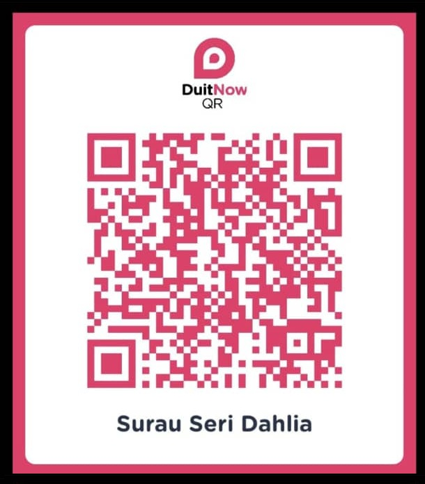

JADUAL AKTIVITI MINGGUAN
Surau Seri Dahlia, Bandar Seri Putra
Makluman Jemaah
Sesiapa yang berhajat untuk mengadakan Doa Selamat atau Tahlil, sila maklumkan kepada Imam Surau atau AJK Surau.
Sumbangan infak makanan amatlah dialu-alukan.
✨ Semoga menjadi amal
jariah kita bersama.
Hadis Harian
—
Memuatkan hadis...
—
